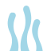
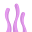

UN’IMMERSIONE NEL SISTEMA BINARIO
Pesca.
Accendi.
Componi.
Un numero da raggiungere.
Le biglie giuste da pescare.
841
I progressi restano qui. Scarica il LOG per consegnarli su Classroom.



DECIMALE IN BINARIO
Obiettivo
Tocca una biglia per pescarla.
0 riuscite0 reti rotte0 tentativi